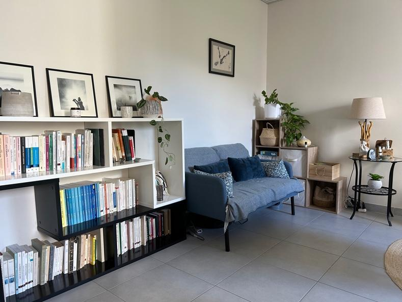

Contact
Informations pratiques et contact
Le cabinet se situe à la Maison de la santé de Pellouailles-les-Vignes (Verrières-en-Anjou), à 15 minutes d'Angers. Consultations sur rendez-vous.
Cabinet
Maison de la santé de Pellouailles-les-Vignes
4 rue de la vieille poste
49112 Verrières-en-Anjou
À 15 minutes d'Angers.
Tarifs
- Thérapie individuelle45 minutes60 €
- Thérapie de couple60 minutes70 €
- Thérapie familiale60 minutes70 €
- Programme MBCTcycle complet — détails350 €
Modalités de paiement
Chèque ou espèces.
Possibilités de remboursement selon les mutuelles.

À très bientôt

Prendre rendez-vous
Le plus simple : appelez-moi ou écrivez-moi, je vous répondrai dès que possible.
Appeler le 06 81 42 11 92